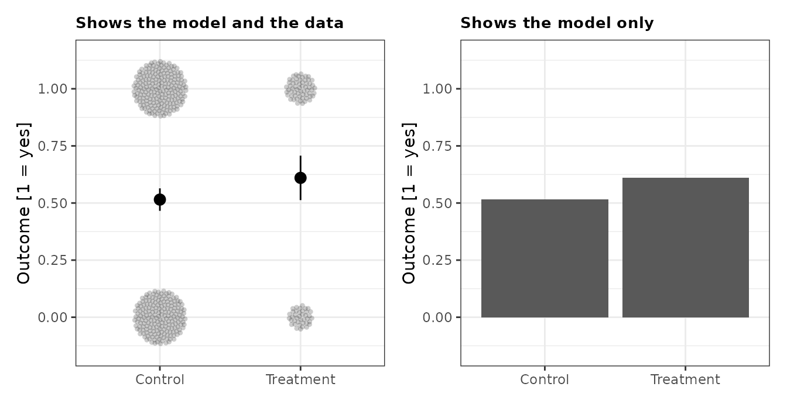
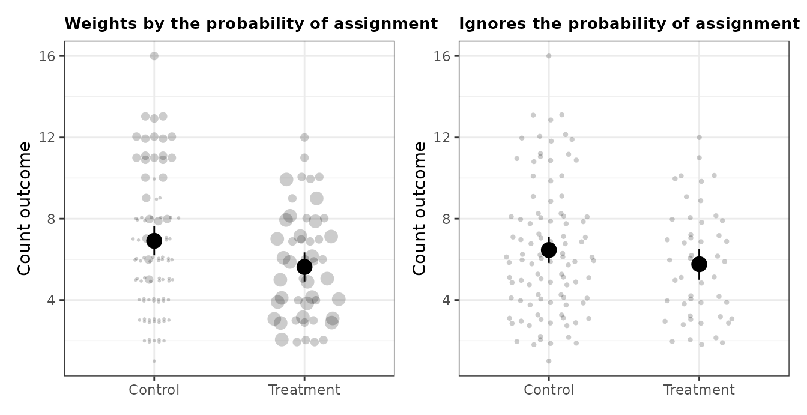
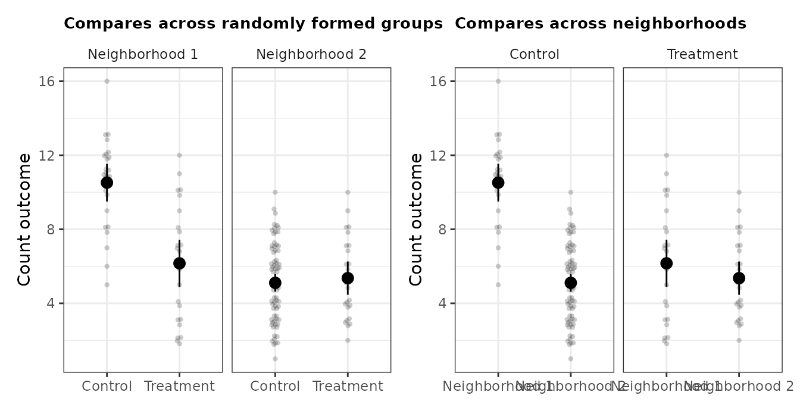
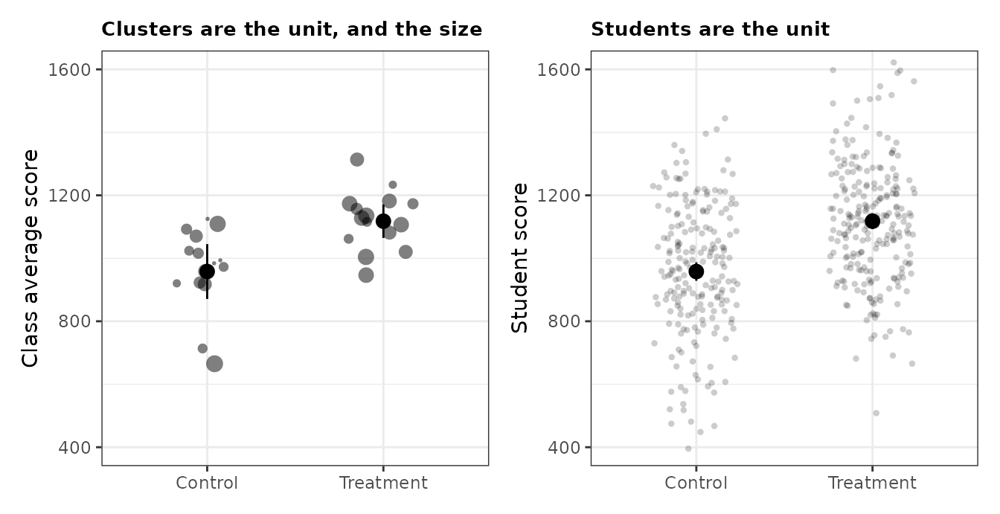
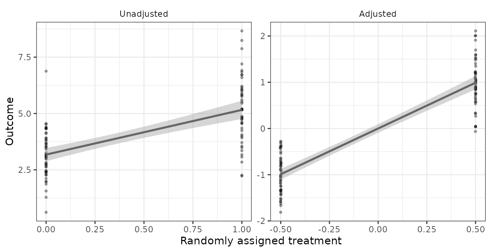
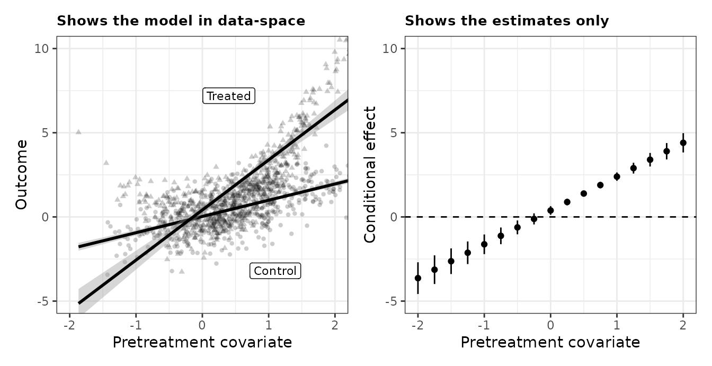
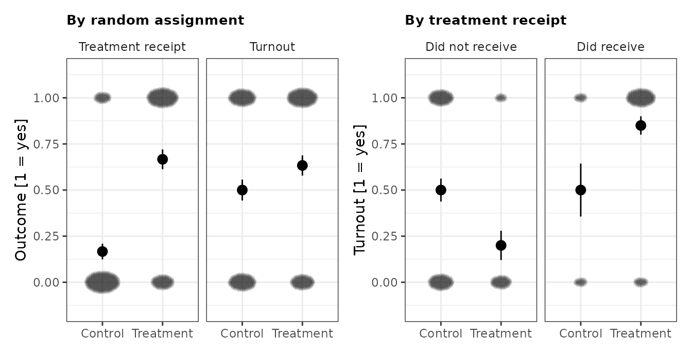
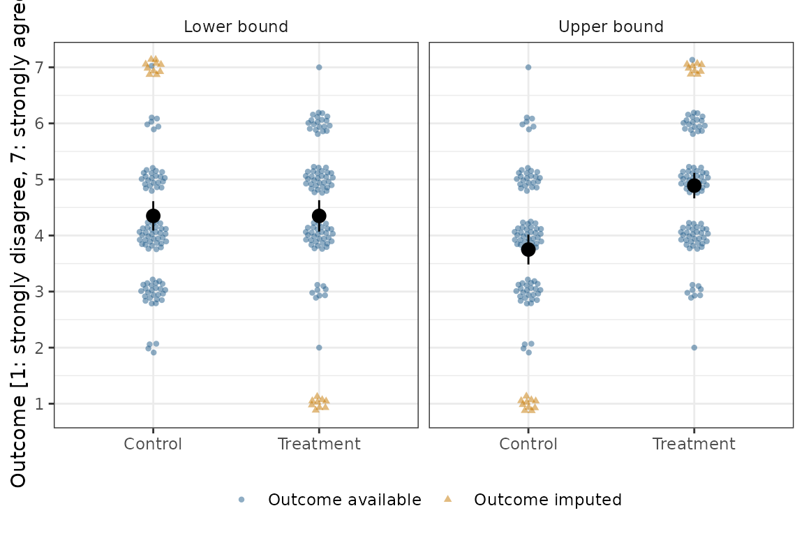

Design-based graphs for seven experiments
design-based-graphs.Rmd“Visualize As You Randomize” works through seven experimental
designs, showing a strong and a weak graph for each (PDF, DOI). This vignette
reproduces those examples. The data are the chapter’s own, simulated and
shipped with vayr, so every figure here can be compared
against the printed one.
The chapter offers three guidelines:
- Invite visual comparisons across randomly formed groups, not across groups formed pre- or post-treatment.
- Show the fitted statistical model, with uncertainty estimates, in data-space.
- Use visual cues like colour, shape, diameter, transparency, and facets to reveal design features like blocking, clustering, or differential probabilities of assignment.
The second guideline is what vayr was built for. Laying
the model over the data means the data have to be legible first, and
experimental data collide: outcomes are often discrete, and points often
differ in size once they carry a weight or stand for a cluster. Five of
the seven examples below use a vayr position adjustment for
one of those two reasons. The other two need none, and say so.
library(dplyr)
library(estimatr)
library(ggplot2)
library(patchwork)
library(tidyr)
library(vayr)
theme_set(theme_bw())
theme_update(
strip.background = element_blank(),
legend.position = "none",
plot.title = element_text(size = 10, face = "bold")
)A two-arm trial
The simplest case. Five hundred subjects, 100 of them treated, and a binary outcome. The strong graph shows the two group means with their confidence intervals sitting on top of the subjects those means summarize. The weak graph is a bar chart, which shows the same two numbers while discarding the sample size, the spread, and the uncertainty.
Every subject sits at 0 or 1, so the raw data are 500 points stacked
on two positions. position_sunflower() spreads each stack
into a disc whose area grows with the number of subjects in it.
summary_df <-
two_arm_trial |>
group_by(condition) |>
reframe(tidy(lm_robust(Y ~ 1))) |>
mutate(Y = estimate)
good <-
ggplot(two_arm_trial, aes(condition, Y)) +
geom_point(position = position_sunflower(density = 60, aspect_ratio = 1.55),
alpha = 0.2, stroke = 0) +
geom_point(data = summary_df, size = 3) +
geom_errorbar(data = summary_df, aes(ymin = conf.low, ymax = conf.high), width = 0) +
scale_y_continuous(breaks = seq(0, 1, 0.25)) +
coord_cartesian(ylim = c(-0.15, 1.15)) +
labs(title = "Shows the model and the data", x = NULL, y = "Outcome [1 = yes]")
bad <-
ggplot(summary_df, aes(condition, Y)) +
geom_col() +
scale_y_continuous(breaks = seq(0, 1, 0.25)) +
coord_cartesian(ylim = c(-0.15, 1.15)) +
labs(title = "Shows the model only", x = NULL, y = "Outcome [1 = yes]")
good + bad
A blocked experiment
Twenty-five residents are treated in each of two neighborhoods. The neighborhoods are different sizes, so a resident of the smaller one is treated with probability 0.5 and a resident of the larger one with probability 0.25. Ignoring that difference biases the estimate.
The strong graph maps the inverse probability weight to point size,
so the subjects who stand for more of the population are drawn larger,
and it weights the model by the same quantity.
position_circlepack() is the adjustment for over-plotted
points of differing size: it packs them rather than letting the large
ones bury the small ones.
weighted_df <-
blocked_experiment |>
group_by(condition) |>
reframe(tidy(lm_robust(Y ~ 1, weights = 1 / Z_cond_prob))) |>
mutate(Y = estimate)
unweighted_df <-
blocked_experiment |>
group_by(condition) |>
reframe(tidy(lm_robust(Y ~ 1))) |>
mutate(Y = estimate)
good <-
ggplot(blocked_experiment, aes(condition, Y)) +
geom_point(aes(size = 1 / Z_cond_prob),
position = position_circlepack(density = 0.03, aspect_ratio = 1),
alpha = 0.2, stroke = 0) +
geom_point(data = weighted_df, size = 4) +
geom_errorbar(data = weighted_df, aes(ymin = conf.low, ymax = conf.high), width = 0) +
scale_size_continuous(range = c(1, 4)) +
labs(title = "Weights by the probability of assignment", x = NULL, y = "Count outcome")
bad <-
ggplot(blocked_experiment, aes(condition, Y)) +
geom_point(position = position_sunflower(density = 1.5, aspect_ratio = 1),
alpha = 0.2, stroke = 0) +
geom_point(data = unweighted_df, size = 4) +
geom_errorbar(data = unweighted_df, aes(ymin = conf.low, ymax = conf.high), width = 0) +
labs(title = "Ignores the probability of assignment", x = NULL, y = "Count outcome")
good + bad
The two estimates differ, and the difference is the whole point of the weights:
bind_rows(
weighted = tidy(lm_robust(Y ~ Z, weights = 1 / Z_cond_prob, data = blocked_experiment)),
unweighted = tidy(lm_robust(Y ~ Z, data = blocked_experiment)),
.id = "estimator"
) |>
filter(term == "Z") |>
select(estimator, estimate, std.error, conf.low, conf.high)
#> estimator estimate std.error conf.low conf.high
#> 1 weighted -1.284444 0.5065836 -2.285516 -0.2833732
#> 2 unweighted -0.700000 0.4953982 -1.678967 0.2789674Blocking can also be shown by faceting. Comparing treatment to control within each neighborhood follows the first guideline, because assignment was random within a neighborhood. Faceting the other way, so that neighborhoods are compared within each arm, invites a comparison across groups nobody randomized.
blocked_labelled <-
blocked_experiment |>
mutate(neighborhood_long = paste("Neighborhood", neighborhood),
neighborhood_short = paste0("N", neighborhood))
by_block <-
blocked_labelled |>
group_by(condition, neighborhood_long, neighborhood_short) |>
reframe(tidy(lm_robust(Y ~ 1))) |>
mutate(Y = estimate)
good <-
ggplot(blocked_labelled, aes(condition, Y)) +
geom_point(position = position_sunflower(density = 1.5, aspect_ratio = 1),
alpha = 0.2, stroke = 0) +
geom_point(data = by_block, size = 3) +
geom_errorbar(data = by_block, aes(ymin = conf.low, ymax = conf.high), width = 0) +
facet_wrap(~ neighborhood_long) +
labs(title = "Compares across randomly formed groups", x = NULL, y = "Count outcome")
bad <-
ggplot(blocked_labelled, aes(neighborhood_short, Y)) +
geom_point(position = position_sunflower(density = 1.5, aspect_ratio = 1),
alpha = 0.2, stroke = 0) +
geom_point(data = by_block, size = 3) +
geom_errorbar(data = by_block, aes(ymin = conf.low, ymax = conf.high), width = 0) +
facet_wrap(~ condition) +
labs(title = "Compares across neighborhoods", x = NULL, y = "Count outcome")
good + bad
A cluster-randomized experiment
Thirty classes are assigned as whole clusters, so every student in a class shares its assignment. The effective sample size is 30, not 441, and standard errors that ignore the clustering are too small.
The strong graph plots the cluster averages rather than the students, with point size proportional to class size, and clusters the standard errors. Point size carries the design feature the chapter’s third guideline asks for.
A class average is a continuous number, so no two classes share a
position and the packing adjustments have nothing to pack:
position_circlepack() and position_sunflower()
both leave every point exactly where it is, by design. What is needed
here is a per-point spread, which is what the jitter family does, and
height = 0 keeps each class at its true average while
separating the classes horizontally.
class_level <-
clustered_experiment |>
group_by(class, condition, n_per_class) |>
summarise(Y = mean(Y), .groups = "drop")
clustered_df <-
clustered_experiment |>
group_by(condition) |>
reframe(tidy(lm_robust(Y ~ 1, clusters = class))) |>
mutate(Y = estimate)
naive_df <-
clustered_experiment |>
group_by(condition) |>
reframe(tidy(lm_robust(Y ~ 1))) |>
mutate(Y = estimate)
good <-
ggplot(class_level, aes(condition, Y)) +
geom_point(aes(size = n_per_class),
position = position_jitter_ellipse(width = 0.2, height = 0, seed = 1),
alpha = 0.5, stroke = 0) +
geom_point(data = clustered_df, size = 3) +
geom_errorbar(data = clustered_df, aes(ymin = conf.low, ymax = conf.high), width = 0) +
scale_size_continuous(range = c(1, 4)) +
coord_cartesian(ylim = c(400, 1600)) +
labs(title = "Clusters are the unit, and the size", x = NULL, y = "Class average score")
bad <-
ggplot(clustered_experiment, aes(condition, Y)) +
geom_point(position = position_jitter_ellipse(width = 0.25, height = 20, seed = 1),
alpha = 0.2, stroke = 0) +
geom_point(data = naive_df, size = 3) +
geom_errorbar(data = naive_df, aes(ymin = conf.low, ymax = conf.high), width = 0) +
coord_cartesian(ylim = c(400, 1600)) +
labs(title = "Students are the unit", x = NULL, y = "Student score")
good + bad
The intervals on the right are narrower, and wrongly so:
bind_rows(
clustered = tidy(lm_robust(Y ~ condition, clusters = class, data = clustered_experiment)),
naive = tidy(lm_robust(Y ~ condition, data = clustered_experiment)),
.id = "estimator"
) |>
filter(term == "conditionTreatment") |>
select(estimator, estimate, std.error, conf.low, conf.high)
#> estimator estimate std.error conf.low conf.high
#> 1 clustered 159.8842 47.39621 62.57697 257.1914
#> 2 naive 159.8842 19.66548 121.23397 198.5344Covariate adjustment
A continuous pretreatment covariate predicts the outcome, so adjusting for it buys precision. The graph shows what the adjustment does by residualizing both the outcome and the treatment on the centred covariate and plotting the result beside the raw data. The estimate is the same in both panels and the uncertainty is not: the standard error falls from 0.25 to 0.09.
The outcome is continuous, so the points spread out vertically on
their own and no vayr position adjustment is called for.
Treatment is still binary in the unadjusted panel, which is why those
points form two stripes. Residualizing is what spreads them along the
horizontal axis on the right.
centred <- covariate_adjustment |> mutate(X_c = X - mean(X))
gg_df <-
centred |>
transmute(
ID,
Y_Adjusted = residuals(lm(Y ~ X_c + X_c:Z, data = centred)),
Z_Adjusted = residuals(lm(Z ~ X_c, data = centred)),
Y_Unadjusted = Y,
Z_Unadjusted = Z
) |>
pivot_longer(
-ID,
names_to = c("variable", "estimation"),
names_sep = "_"
) |>
pivot_wider(names_from = variable, values_from = value) |>
mutate(estimation = factor(estimation, levels = c("Unadjusted", "Adjusted")))
ggplot(gg_df, aes(Z, Y)) +
geom_point(alpha = 0.4, stroke = 0) +
stat_smooth(method = "lm_robust", colour = "grey40") +
facet_wrap(~ estimation, scales = "free") +
labs(x = "Randomly assigned treatment", y = "Outcome")
Residualizing recovers the covariate-adjusted estimate, which is the claim the figure is making:
bind_rows(
lin = tidy(lm_lin(Y ~ Z, covariates = ~ X, data = covariate_adjustment)),
residualized = tidy(lm_robust(Y ~ Z, data = filter(gg_df, estimation == "Adjusted"))),
unadjusted = tidy(lm_robust(Y ~ Z, data = covariate_adjustment)),
.id = "estimator"
) |>
filter(term == "Z") |>
select(estimator, estimate, std.error)
#> estimator estimate std.error
#> 1 lin 1.979602 0.09485816
#> 2 residualized 1.979602 0.09397970
#> 3 unadjusted 1.983855 0.25155697An effect that varies with a covariate
The treatment effect is a nonlinear function of X. The
strong graph plots both fitted lines in data-space and labels them
directly, so a reader can see the data the lines are drawn through and
judge where the model fits and where it does not. The weak graph plots
the estimated conditional effect at a series of covariate values,
discarding the data entirely, which leaves a reader unable to tell that
the effect is being extrapolated where X is sparse.
Both axes are continuous again, so again no position adjustment is needed.
fit <- lm_robust(Y ~ condition * X, data = continuous_interaction)
label_df <- data.frame(
X = c(1.1, 0.4),
Y = c(-3.2, 7.2),
condition = c("Control", "Treatment"),
label = c("Control", "Treated")
)
good <-
ggplot(continuous_interaction, aes(X, Y, group = condition, shape = condition)) +
geom_point(alpha = 0.2, stroke = 0) +
stat_smooth(method = "lm_robust", fullrange = TRUE, colour = "black") +
geom_label(data = label_df, aes(label = label), size = 3) +
coord_cartesian(xlim = c(-2, 2), ylim = c(-5, 10)) +
labs(title = "Shows the model in data-space",
x = "Pretreatment covariate", y = "Outcome")
# The conditional effect at x is the gap between the two fitted lines. The model
# is saturated in condition, so it is two separate regressions and the arms'
# predictions are independent, which is why their variances add here.
grid <- data.frame(X = seq(-2, 2, by = 0.25))
treated <- predict(fit, newdata = mutate(grid, condition = "Treatment"), se.fit = TRUE)
control <- predict(fit, newdata = mutate(grid, condition = "Control"), se.fit = TRUE)
cate_df <-
grid |>
mutate(estimate = unname(treated$fit - control$fit),
std.error = unname(sqrt(treated$se.fit^2 + control$se.fit^2)),
conf.low = estimate - 1.96 * std.error,
conf.high = estimate + 1.96 * std.error)
bad <-
ggplot(cate_df, aes(X, estimate)) +
geom_hline(yintercept = 0, linetype = "dashed") +
geom_point() +
geom_errorbar(aes(ymin = conf.low, ymax = conf.high), width = 0) +
coord_cartesian(xlim = c(-2, 2), ylim = c(-5, 10)) +
labs(title = "Shows the estimates only",
x = "Pretreatment covariate", y = "Conditional effect")
good + bad
Noncompliance
Assignment does not determine receipt in either direction. Fifty of the 300 control subjects took the treatment anyway, and 100 of the 300 treated subjects did not take it. Receipt is a post-treatment variable, so conditioning on it invites post-treatment bias.
The strong graph shows the effect of assignment on two outcomes, receipt and turnout, side by side. Both comparisons are across randomly formed groups. The weak graph facets by receipt, which forms the groups after treatment: neither the comparison inside a facet nor the comparison across facets identifies anything.
Both outcomes are binary, so position_sunflower() again
does the work of making 600 points visible.
# The grouping column is named dv rather than outcome because estimatr's tidy()
# returns a column called outcome, which would collide and add a third facet.
long_df <-
noncompliance_experiment |>
pivot_longer(c(D, Y), names_to = "dv", values_to = "value") |>
mutate(dv = factor(dv, c("D", "Y"), c("Treatment receipt", "Turnout")))
by_assignment <-
long_df |>
group_by(Z, dv) |>
reframe(tidy(lm_robust(value ~ 1))) |>
mutate(value = estimate)
good <-
ggplot(long_df, aes(Z, value)) +
geom_point(position = position_sunflower(density = 50, aspect_ratio = 3.3),
alpha = 0.15, stroke = 0) +
geom_point(data = by_assignment, size = 3) +
geom_errorbar(data = by_assignment, aes(ymin = conf.low, ymax = conf.high), width = 0) +
facet_wrap(~ dv) +
scale_y_continuous(breaks = seq(0, 1, 0.25)) +
coord_cartesian(ylim = c(-0.15, 1.15)) +
labs(title = "By random assignment", x = NULL, y = "Outcome [1 = yes]")
received <-
noncompliance_experiment |>
mutate(D = factor(D, 0:1, c("Did not receive", "Did receive")))
by_receipt <-
received |>
group_by(Z, D) |>
reframe(tidy(lm_robust(Y ~ 1))) |>
mutate(Y = estimate)
bad <-
ggplot(received, aes(Z, Y)) +
geom_point(position = position_sunflower(density = 50, aspect_ratio = 3.3),
alpha = 0.15, stroke = 0) +
geom_point(data = by_receipt, size = 3) +
geom_errorbar(data = by_receipt, aes(ymin = conf.low, ymax = conf.high), width = 0) +
facet_wrap(~ D) +
scale_y_continuous(breaks = seq(0, 1, 0.25)) +
coord_cartesian(ylim = c(-0.15, 1.15)) +
labs(title = "By treatment receipt", x = NULL, y = "Turnout [1 = yes]")
good + bad
Attrition
Nineteen of 200 subjects have a missing outcome, and missingness is related to the potential outcomes, so dropping them conditions on a post-treatment variable. Extreme value bounds avoid that by imputing the logical best and worst cases instead. The lower bound imputes the smallest possible outcome for missing treated subjects and the largest for missing control subjects; the upper bound reverses it.
impute_extreme_values() does the imputation. It takes
the outcome’s logical range, which for a seven-point Likert item is 1 to
7 whether or not anybody in the sample used both endpoints, and it flags
which points are observed and which are imputed. Mapping that flag to
colour and shape keeps the distinction legible in
grayscale.
bounded <- impute_extreme_values(
attrition_experiment,
outcome = "Y",
assignment = "Z",
range = c(1, 7)
)
bounded <- bounded |> mutate(condition = if_else(Z == 1, "Treatment", "Control"))
bound_means <-
bounded |>
group_by(condition, scenario) |>
reframe(tidy(lm_robust(Y ~ 1))) |>
mutate(Y = estimate)
ggplot(bounded, aes(condition, Y)) +
geom_point(aes(colour = imputed, shape = imputed),
position = position_sunflower(density = 45, aspect_ratio = 0.34),
alpha = 0.5, stroke = 0) +
geom_point(data = bound_means, size = 3) +
geom_errorbar(data = bound_means, aes(ymin = conf.low, ymax = conf.high), width = 0) +
facet_wrap(~ scenario) +
scale_colour_manual(values = c("#205C8A", "#C67800")) +
scale_y_continuous(breaks = 1:7) +
labs(x = NULL, y = "Outcome [1: strongly disagree, 7: strongly agree]") +
theme(legend.position = "bottom", legend.title = element_blank())
The two scenarios bracket the effect. Under the worst case the estimate is essentially zero, and under the best case it is a little over a full scale point, so the data are consistent with any effect in between:
bounded |>
group_by(scenario) |>
reframe(tidy(lm_robust(Y ~ Z))) |>
filter(term == "Z") |>
select(scenario, estimate, std.error, conf.low, conf.high)
#> # A tibble: 2 × 5
#> scenario estimate std.error conf.low conf.high
#> <fct> <dbl> <dbl> <dbl> <dbl>
#> 1 Lower bound 5.06e-16 0.193 -0.381 0.381
#> 2 Upper bound 1.14e+ 0 0.177 0.792 1.49Requiring the range at the call site matters here. No subject in this sample answered 1, so a function that guessed the range from the observed data would have used 2 to 7 and reported bounds narrower than the data support:
observed_range <- range(attrition_experiment$Y, na.rm = TRUE)
lapply(list(logical = c(1, 7), guessed = observed_range), function(r) {
impute_extreme_values(attrition_experiment, "Y", "Z", range = r) |>
group_by(scenario) |>
reframe(tidy(lm_robust(Y ~ Z))) |>
filter(term == "Z") |>
summarise(lower = min(estimate), upper = max(estimate), width = upper - lower)
}) |>
bind_rows(.id = "range_used")
#> # A tibble: 2 × 4
#> range_used lower upper width
#> <chr> <dbl> <dbl> <dbl>
#> 1 logical 5.06e-16 1.14 1.14
#> 2 guessed 9.00e- 2 1.04 0.95Where this leaves the guidelines
Five of the seven examples use a position adjustment, for two different reasons. The two-arm trial, noncompliance, and attrition have discrete outcomes, so hundreds of subjects land on a handful of values and the model would otherwise sit on top of a solid bar of ink. The clustered experiment has a continuous outcome and uses one anyway, because its points stand for classes of different sizes and the big ones would bury the small ones. The blocked experiment has both problems at once, a count outcome and points that carry inverse probability weights.
The two remaining examples put a continuous covariate on the horizontal axis and need no adjustment. A position adjustment applied where nothing collides moves points away from where the data are and buys nothing.
The chapter is careful that its guidelines are not rules. It gives
its own counterexample: in work on political persuasion, treatment and
control subgroup averages are connected with parallel lines precisely to
invite a comparison across partisanship, a pretreatment covariate, in
clear violation of the first guideline. That comparison is the finding.
The patriot_act example in
vignette("vayr-vignette") is that figure.